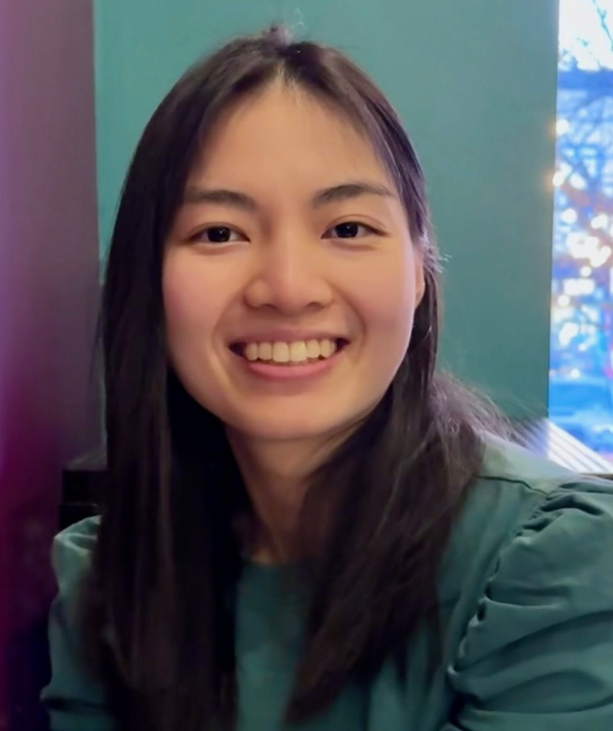

As the first AI Librarian at the University of Chicago, I work on AI literacy and adoption at an institutional level. I manage a strategic priority on AI, teach student and faculty workshops, and build risk evaluation frameworks for assessing internal projects and vendor tools.
I have a BA in Linguistics from UC Berkeley and an MSE in Computer Science from Johns Hopkins University. This combination allows me to communicate effectively with technical and non-technical stakeholders and design how AI should be taught. Experiences across big tech, startups, nonprofits, and academia have given me a strong understanding how novel technologies like AI are built, integrated, and received in a variety of contexts and priorities.
What I'm developing: an open and modular AI education program accessible to learners without traditional technical backgrounds. Unlike existing AI education resources, this prioritizes civic participation, critique, and responsible use over technical career placement.
AI literacy is becoming a gatekeeping competency. Without it, people are excluded from professional opportunity, and more importantly, from participating in decisions about systems that impact everyday life. Addressing bias and harm requires contributions from different academic fields and the communities affected by these technologies, and current AI education resources do not support these learners.
Prequel: Gaita is a conversational RAG system that generates personalized Computer Science learning pathways from open-access courseware. Inspired by my own transition into tech, Gaita was designed to make CS education accessible to learners from non-technical and non-traditional backgrounds.
Research interests: How archival silence and unrepresentative training data surface as algorithmic bias and model error, as well as developing metrics, methods, and workflows to identify and mitigate these issues. Language models learn from data that disproportionately encode the ideas and perspectives of privileged groups, e.g. those historically afforded an education and platform, while underrepresenting others due to factors like data quality, language, and uneven digitization.
Talks & Workshops
Upcoming Talks
Summer Institute in Social Research Methods Talk
June 23, 2026 11:45 PM | Workshop
Location: Booth School of Business, C25
Past Talks
AI in Academic Work: Capabilities, Limitations, and Responsible Use
May 11, 2026 12:15 PM | Guest Lecture, AI & Me Series, University of Chicago Law School
Location: D'Angelo Law Library, Room V
Working with AI at UChicago
May 4, 2026 1:30 PM | Guest Speaker, University of Chicago Exploratory Teaching Group (ETG)
Location: Wieboldt 310 D & E
AI in Academic Librarianship: What This Work Looks Like in Practice
April 16, 2026 7:00 PM EDT | Guest Speaker, University of South Carolina School of Information Science
Location: Virtual
What AI Can and Cannot Do
February 17, 2026 2:00 PM | Workshop, Grad @ UChicago
Demystifying what AI is and what it can and cannot do to help in the contexts of research and industry.
Location: UChicago GRAD Headquarters
Pulling the Wool Over AI
February 10, 2026 12:30 PM | Guest Lecture, HUMA 10001: Undergraduate Research—What, Why, and How
Learn about AI by seeing where and why it fails. Explore what AI excels at and where it falls short. In this session, we’ll focus on hallucination and what it teaches us about how AI works.
Using AI in Research and Writing
February 5, 2026 11:00 AM | Workshop, University of Chicago Center for Digital ScholarshipIntroduction to AI tools in research and considerations for responsible use, including copyright, bias, and hallucination.
Location: Regenstein 101A
Pulling the Wool Over AI
November 18, 2025 3:00 PM | Workshop, University of Chicago Center for Digital Scholarship
Location: Regenstein 101A
Responsible AI Use in Humanities Research
October 24, 2025 2:00 PM | Guest lecture, GNSE Thesis Seminar
Introduction to AI tools in research and considerations for responsible use, including copyright, bias, and hallucination.
Gaita: a RAG System for Personalized Computer Science Education
September 18, 2024 10:00 AM | Research talk at Apple
Research talk presenting Gaita, a conversational AI system that generates personalized Computer Science learning pathways.